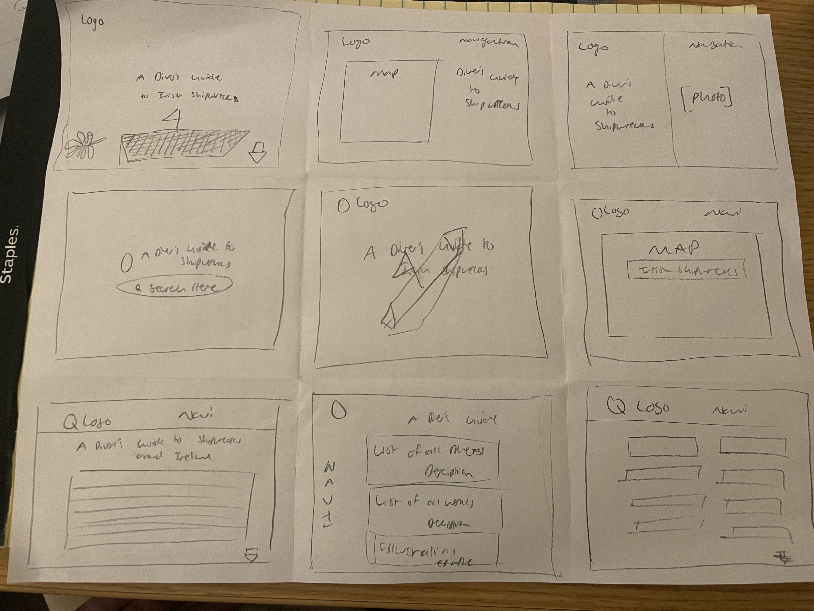
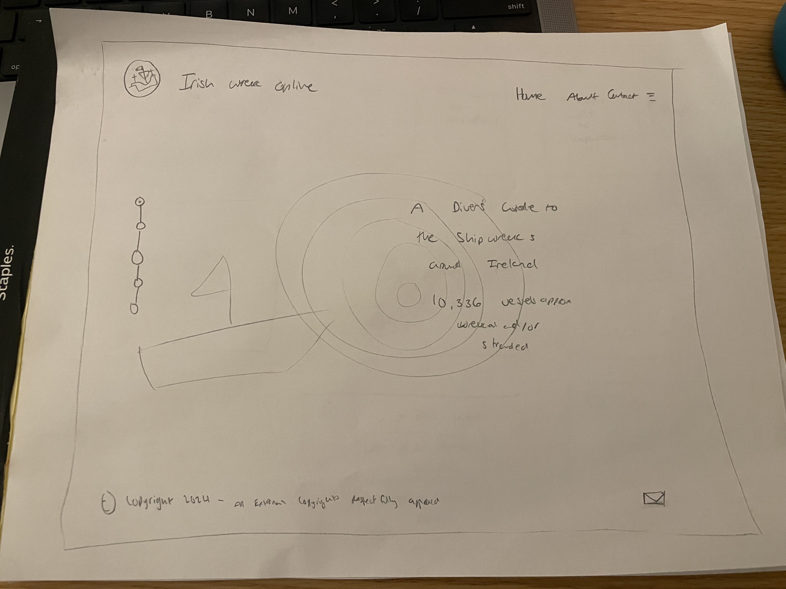
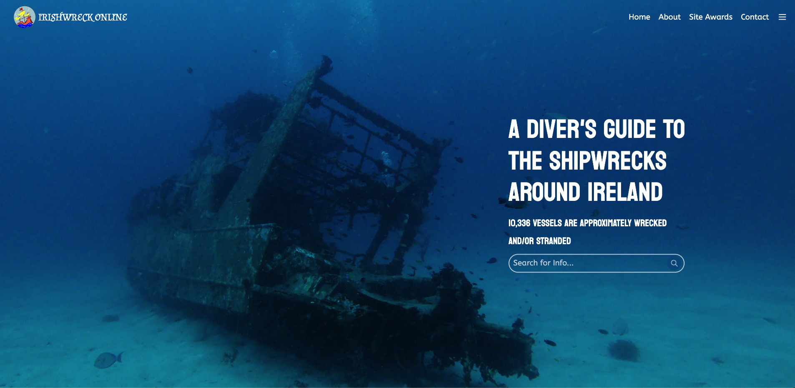

In this assignment, students were tasked with identifying a website with
Usability issues, visually redesigning the website, and finally building
the redesign using HTML and CSS. To start, I chose
irishwrecksonline.net
a website that provides information on dive-able shipwrecks around
Ireland. The website has a lot of usability issues, including a lack of
alt text, poor color contrast, and a lack of mobile responsiveness. The
design also dated and there are a lot of creative ways that this
information can be presented. Second, the website's design is simple but
unintuitive so I believe I can significantly improve the user experience.
Finally, I am interested in shipwrecks and diving and enjoy the content of
the website. The website is pictured below.
Below are all usability problems found in the website
The WAVE Report mentioned that the website is missing alt text on a lot of its images, and it’s also missing documentation of the language that’s used. The website is also missing a heading structure and a label. For one, the lack of alt text makes it difficult for visually impaired readers to understand what the site content has. In addition, the page has no heading structure or page regions. This makes it harder for a search engine or LLM to obtain information from the website which makes the website harder to reach and thus inaccessible.
Using a pencil and paper, I sketched 9 options for my redesign.
Using a pencil and paper, I sketched my final design using my favorite elements from my sketches.
Next, I created a low-fidelity wireframe using Figma for each screensize (mobile, tablet, and desktop). I annotated where your wireframe solves those problems and describe how. The Figma link is here there are 3 pages, one for each screen size.
I created a visual design style guide that displays the main colors, typography, and resuable components of my design. The Figma link is here The style guide is under the UI Style Guide page.
Next, I created a high-fidelity wireframe using Figma for each screensize (mobile, tablet, and desktop). The Figma link is here there are 3 pages, one for each screen size. Next to each low-fidelity mockup is the high-fidelity mockup.
I created a responsive redesign of the website using HTML and CSS. The website is fully responsive and has a modern design. The website is pictured below.
The website is also linked here.
In conclusion, I was able to identify usability problems with irishwrecksonline.net, visually redesign the website, and finally build the redesign using HTML and CSS. I learned a lot about the importance of usability and how to identify and solve usability problems. Overall, I learned a lot about web design and usability and I'm excited to continue learning more about web design and usability in the future :)